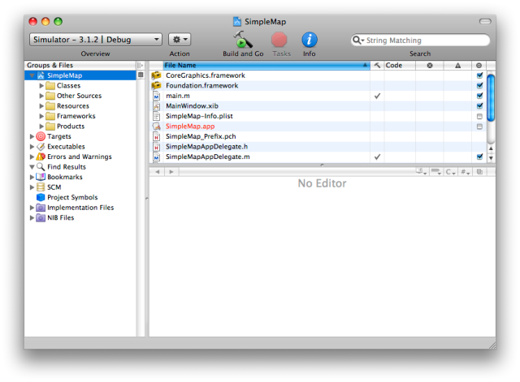
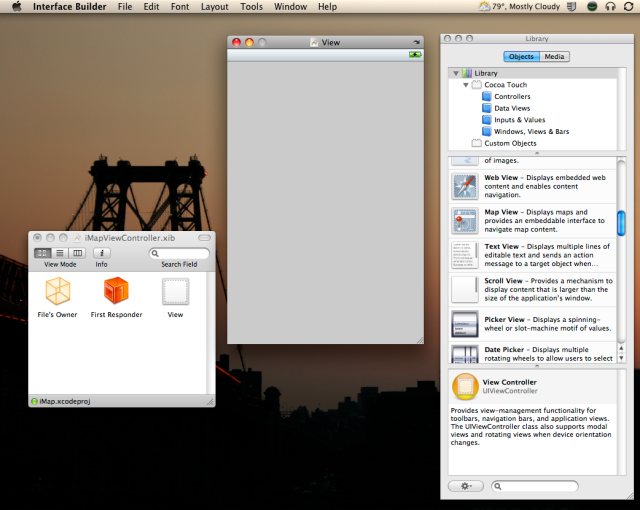
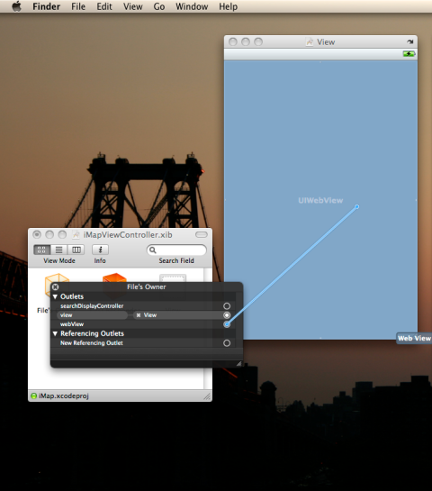
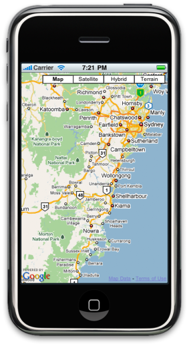

©2010 Google -
Code Home -
Terms of Service -
Privacy Policy -
Site Directory
Google Code offered in:
English -
Español -
日本語 -
한국어 -
Português -
Pусский -
中文(简体) -
中文(繁體)
Maps Javascript API V3
Maps Javascript API V2
(Deprecated API)
Maps API for Flash
Maps Data API
(Deprecated API)
Static Maps API
Earth API
-
Local Search API
(Deprecated API)
Includes enterprise licensing and support
Google Maps API V3: Developing Native iPhone Applications
Tom Manshreck, Maps API Team
January, 2010
Adding a
January, 2010
This tutorial walks through creation of a native iPhone™ application using the Google Maps JavaScript API V3. This tutorial discusses some of Apple's Objective-C programming syntax, and does not assume any prior knowledge, though this should not be considered an exhaustive tutorial in Apple iPhone development or Objective-C programming.
For documentation on iPhone development, contact Apple's official iPhone Dev Center.
This tutorial was written using version 3.1.2 of the iPhone SDK.
Why Develop a native iPhone Maps Application?
When developing a Google Maps API application, you have several options, as discussed in Overview of Mobile Development for the Google Maps API.
A native iPhone application written using the Google Maps JavaScript API V3 has many of the advantages of a native application (ability to launch as a separate application, sale through the App Store, etc.) while also allowing you to take advantage of newer features available in the most current Google Maps API.
Setting Up the Apple iPhone SDK
This tutorial assumes you've enrolled in the iPhone Developer
Program and have downloaded and installed the iPhone SDK. For
more information, consult
http://developer.apple.com/iphone/program/. To
download the SDK, you will need to obtain an Apple ID.
Once you've downloaded and installed the SDK, start up XCode, Apple's main development IDE. This application, by default, is located within the Developer -> Applications folder on your hard drive.
Once XCode is launched, select File -> New Project. The New Project dialog box appears:

Select View-based Application and click the Choose button. Enter a name for your project and save the project file to your desktop. XCode creates a number of files for you automatically and brings you to the default view.

iPhone applications within the Apple SDK are written in Objective-C. The Apple SDK makes extensive use of a type of MVC (Model-View-Controller) framework to specify how objects respond and communicate with each other. Your code typically relies on Controller objects to handle state changes and communicate directly with Model objects, typically through the Delegation Design Pattern.
Your initial application code consists of a root
main.m, and class definitions for two
classes:
- A
projectNameAppDelegateclass which acts as the application "model." - A
projectNameAppViewControllerclass which receives most input/output messages, and communicates with the delegate classes. (This class is not a strict controller, but for the purposes of this tutorial, don't worry about that.)
Additionally, UI files, ending in .xib,
act as the View within the MVC framework. Generally,
you modify the UI through a special XCode
application known as the Interface Builder.
Adding a UIWebView
Conveniently, the Apple SDK provides a special class
that implements most of the functionality of a web browser.
This class, the UIWebView class implements
Apple's version of the WebKit browser layout engine.
We'll hook this class into the application's code.
Each class within Apple's SDK is typically defined using two files:
- Interface files, ending in
.h - Implementation files, ending in
.m
Opening the Classes folder, you should therefore see
four files for your two classes: a Delegate
class for the application's model and a ViewController
class, which acts as a controller for any displayed objects.
We'll now want to add a UIWebView as an instance
variable to the application so that we can reference it within
the application's View. Open the
projectNameController.h file and modify
the class's @interface declaration with the following
code:
@interface MySampleController : UIViewController {
IBOutlet UIWebView *webView;
}
This declaration creates a webView
instance variable using the UIWebView
class. Additionally, the IBOutlet
instruction tells XCode that this object should
be exposed as an outlet within XCode's
Interface Builder, allowing you to dynamically attach
this UIWebView to other UI elements
in the iPhone application.
Hooking Up the UI
Now, let's hook up the Web View to our UI. Select the Controller's .nib file within the NIB folder and double-click on it. Interface Builder will launch and display a number of windows, including:
- A XIB panel showing the interface objects
- A View panel containing a mockup of the iPhone screen
- A Library panel containing a collection of objects which you can attach to your UI through drag and drop actions

Within the Library panel, select the Web View object and drag and drop it onto the controller's View window. The Web View will resize to occupy the window's full screen.
Now CTRL-click on the File's Owner object within the XIB window. A property dialog box will appear. Select the outlet (open circle) on the webView instance variable and drag and drop it onto the Web View object.

This action attaches the webView instance variable to the
Web View object we dropped on the window.
Loading the HTML Application
Now, return to XCode and open the
projectNameViewController.m file. Uncomment the
template viewDidLoad message and add the following
code:
// Implement viewDidLoad to do additional setup after loading the view,
// typically from a nib.
- (void) viewDidLoad {
NSString *url = @"http://code.google.com/apis/maps/documentation/javascript/examples/map-geolocaton-iphone.html";
NSURLRequest *request = [NSURLRequest requestWithURL:[NSURL URLWithString:url]];
[webView loadRequest:request];
[super viewDidLoad];
}
This code instructs the application to load the given URL within the
application's webView object upon completion of the
viewDidLoad message. Note that our "application" in reality
is simply an HTML file retrieved from the web, though instead of loading
it within a browser, we are loading it directly within the application.
The code for this application is shown below:
<html>
<head>
<meta name="viewport" content="initial-scale=1.0, user-scalable=no" />
<meta http-equiv="content-type" content="text/html; charset=UTF-8"/>
<title>Google Maps JavaScript API v3 Example: iPhone Geolocation</title>
<script type="text/javascript" src="http://maps.google.com/maps/api/js?sensor=false"></script>
<script type="text/javascript">
var initialLocation;
var newyork = new google.maps.LatLng(40.69847032728747, -73.9514422416687);
function initialize() {
var myOptions = {
zoom: 14,
mapTypeId: google.maps.MapTypeId.ROADMAP
};
var map = new google.maps.Map(document.getElementById("map_canvas"), myOptions);
// Safari supports the W3C Geolocation method
if(navigator.geolocation) {
navigator.geolocation.getCurrentPosition(function(position) {
initialLocation = new google.maps.LatLng(position.coords.latitude,position.coords.longitude);
var placeMarker = new google.maps.Marker({
position: initialLocation,
map: map,
});
map.setCenter(initialLocation);
}, function() {
handleNoGeolocation(browserSupportFlag);
});
} else {
// Browser doesn't support Geolocation
handleNoGeolocation();
}
function handleNoGeolocation() {
initialLocation = newyork;
map.setCenter(initialLocation);
}
}
</script>
</head>
<body style="margin:0px; padding:0px;" onload="initialize()">
<div id="map_canvas" style="width:100%; height:100%"></div>
</body>
</html>
This HTML page contains Google Maps Javascript API V3 code for retrieving the current location (via the W3C Geolocation standard supported by Safari) and plotting that location on the map. More information about geolocation is located in the Maps API V3 documentation.
Note that this application is quite simple; you may wish to enable more robust mobile-specific usages of Geolocation within your HTML application. You can do so using the techniques explained in the Apple iPhone Dev Center documentation.
Because this code is simply a full-screen HTML page, it automatically
supports all orientations. We'll then want to alter the
template shouldAutorotateToInterfaceOrientation method
to return YES in all cases, and this will enable both
portrait and landscape modes.
// Implement viewDidLoad to do additional setup after loading the view, typically from a nib.
- (void) shouldAutorotateToInterfaceOrientation:(UIInterfaceOrientation)interfaceOrientation {
return YES;
}
Running Your Application
We're now ready to build and run our application. Click Build and Go and XCode will build your application, launch the iPhone Simulator, and display your map once the application finishes loading:

Congratulations! With this simple code, you've built an iPhone application running Google Maps JavaScript API V3!